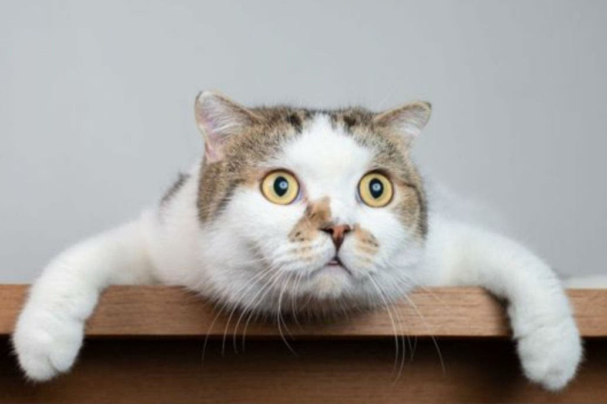

Noticias

01/05/2020Campaña de vacunación antirrábica gratuita de perros y gatos |

31/04/2020Se realizaron mas de 150 castraciones gratuitas por parte de los veterinarios |
28/04/2020¿Qué pasa en los hogares con mascotas no convencionales? |

15/04/2020Gatos en cuarentena: cómo identificar problemas de ansiedad y estrés |
15/04/2020Recomendaciones para mantener a tu perro saludable en esta cuarentena |